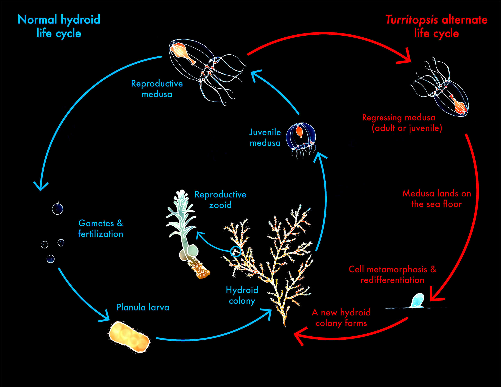
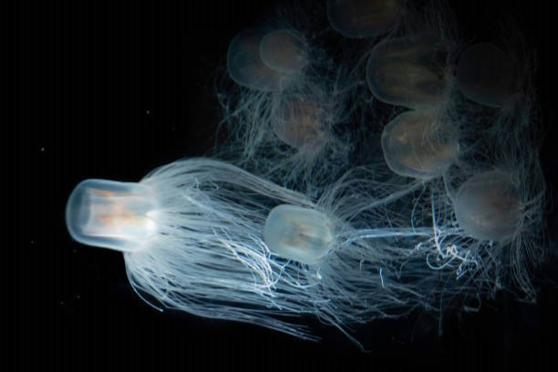

Facts
Identification:
- Kingdom: Animalia
- Phylum: Cnidaria
- Class: Hydrozoa
- Order: Anthoathecata
- Family: Oceaniidae
- Genus: Turritopsis
- Scientific Name: Turritopsis dohrnii
- Other names: Medusa, benjamin button jellyfish
The immortal jellyfish exists in two forms: polyp form and medusa form. Though it usually starts as polyp and transitions into a medusa, it can revert back in its forms through a process called transdifferentiation. Transdifferentatiaton is, according to the medical dictionary, “The conversion of stem cells derived from one tissue into cells normally found in another tissue.” This allows them to biologically live forever because when they reach a certain age it can decide when its cells convert backwards.

Overview:
- Prey: Tiny sea creatures
- Group: Behavior Colony
- Biggest Threat: Predation
- Most Distinctive Feature: Regeneration ability
- Gestation Period: 2-3 days
- Habitat: Temperate to tropical saltwater worldwide
- Predators: Larger jellyfish, sea anemones, tuna, sharks, swordfish, sea turtles, penguins
- Diet: Omnivore
- Favorite Food: Plankton, fish eggs, larvae, brine shrimp
- Type: Medusuzoa
- Common Name: Immortal jellyfish, Benjamin Button jellyfish
- Number Of Species: 1
- Origin: Mediterranean sea
- Found Today: All over the world. Both temperate and tropical regions. Prefers warmer waters.
- Size: 4-5 mm tall and wide
